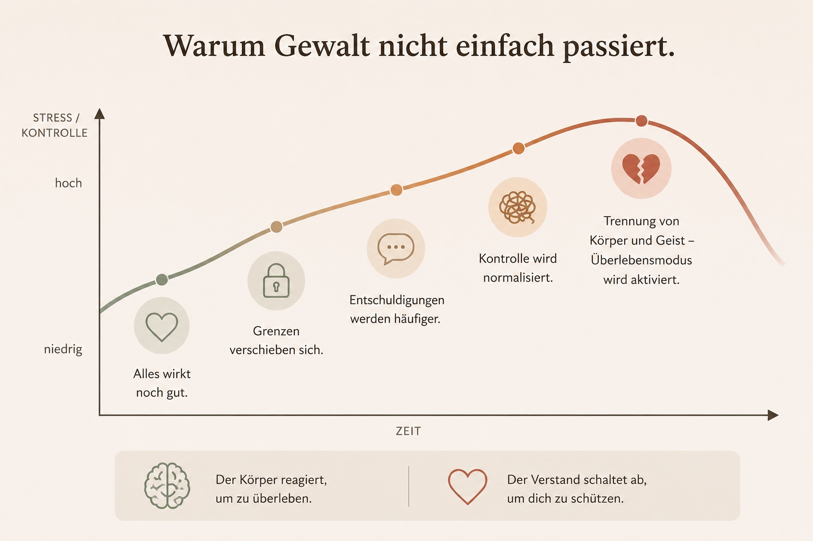
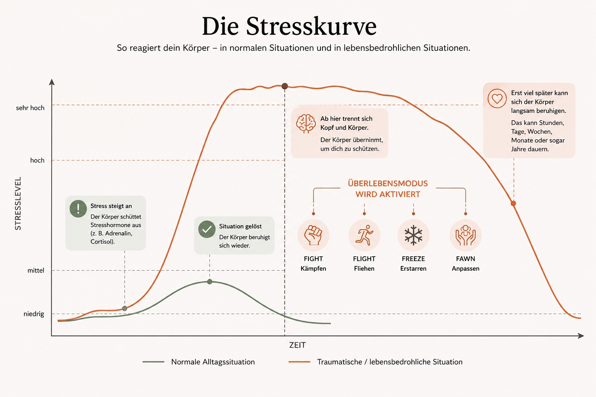

Verstehen kann entlasten.
Viele Menschen fragen sich nach belastenden Erfahrungen, warum sie heute noch so stark reagieren. Vielleicht erschreckst du dich schnell, fühlst dich häufig angespannt, hast Erinnerungslücken oder kannst bestimmte Situationen nur schwer aushalten. Diese Reaktionen wirken oft verwirrend. Tatsächlich sind sie häufig verständliche Folgen dessen, was Körper und Gehirn während einer Gewalterfahrung leisten mussten, um zu überleben. Auf dieser Seite findest du Informationen, die helfen können, diese Zusammenhänge besser zu verstehen.
Das Gehirn im Überlebensmodus
In einer bedrohlichen Situation versucht unser Gehirn nicht, alles bewusst wahrzunehmen oder logisch zu denken. Seine wichtigste Aufgabe ist es, unser Überleben zu sichern.

Während der Überlebensmodus aktiv ist, arbeitet das Gehirn anders als im Alltag. Bereiche, die für schnelles Handeln zuständig sind, werden besonders aktiv. Andere Bereiche, die Erinnerungen ordnen, Entscheidungen treffen oder Situationen bewerten, arbeiten nur eingeschränkt.
Deshalb erleben viele Betroffene später Reaktionen wie:
- Erinnerungslücken oder nur bruchstückhafte Erinnerungen
- starke Anspannung oder Schreckhaftigkeit
- das Gefühl, wie betäubt oder „nicht richtig da“ zu sein
- Schwierigkeiten, Entscheidungen zu treffen
- Schuldgefühle oder Zweifel an der eigenen Wahrnehmung
Wichtig zu wissen
Diese Reaktionen bedeuten nicht, dass mit dir etwas nicht stimmt. Sie können Ausdruck eines Nervensystems sein, das gelernt hat, auf Gefahr zu reagieren.
Warum Gewalt nicht einfach passiert
Viele Menschen fragen sich im Nachhinein, warum sie die Beziehung nicht früher verlassen haben oder warum sie die Gewalt nicht sofort erkannt haben. Doch Gewalt beginnt nur selten plötzlich.

Oft entwickeln sich Grenzüberschreitungen schrittweise. Anfangs wechseln sich liebevolle Momente mit ersten Verletzungen ab. Mit der Zeit werden Kontrolle, Abwertung, Einschüchterung oder körperliche Übergriffe häufiger. Dadurch verschieben sich persönliche Grenzen langsam. Viele Betroffene versuchen, die Situation zu verstehen, geben sich selbst die Schuld oder hoffen, dass sich alles wieder verändert.
Wichtig zu wissen
Dass Gewalt schleichend beginnt, ist Teil der Dynamik von Gewalt. Deshalb erkennen viele Menschen erst im Nachhinein, dass sie Gewalt erlebt haben. Das bedeutet nicht, dass sie versagt haben.
Viele Betroffene denken:
- „Vielleicht übertreibe ich.“
- „So schlimm ist es doch gar nicht.“
- „Es war bestimmt meine Schuld.“
- „Er oder sie meint es eigentlich nicht so.“
- „Vielleicht wird wieder alles wie früher.“
Diese Gedanken sind häufig Teil der Gewaltdynamik und können es erschweren, die Situation klar einzuordnen.
Die Stresskurve
Unser Nervensystem reagiert ständig auf das, was um uns herum passiert. Fühlen wir uns sicher, können wir klar denken, lernen, entscheiden und mit anderen Menschen in Kontakt sein. Steigt die Belastung, schaltet unser Körper Schritt für Schritt in einen Überlebensmodus.

Die Stresskurve zeigt, wie sich unser Körper verändert, wenn Belastung immer weiter zunimmt. Zu Beginn können wir noch bewusst handeln. Mit zunehmendem Stress wird das Denken schwieriger. Schließlich übernimmt das Nervensystem automatisch, um unser Überleben zu sichern.
Wichtig zu wissen
Diese Reaktionen laufen automatisch ab. Sie sind keine bewusste Entscheidung und kein Zeichen von Schwäche. Sie sind Schutzmechanismen, die unser Körper entwickelt hat, um Gefahr zu überleben.
Überlebensreaktionen
Fight – Kämpfen
Der Körper versucht, sich aktiv gegen die Bedrohung zu wehren.
Flight – Fliehen
Der Körper möchte der Gefahr entkommen und sucht nach einem Ausweg.
Freeze – Erstarren
Der Körper wird bewegungslos oder fühlt sich wie gelähmt. Diese Reaktion ist sehr häufig und dient dem Überleben.
Fawn – Anpassen
Manche Menschen versuchen, durch Anpassung, Beschwichtigung oder Gefallen die Gefahr zu verringern. Auch das ist eine Überlebensstrategie.
Welche Reaktion ein Mensch zeigt, lässt sich nicht bewusst auswählen. Jede dieser Reaktionen ist eine normale Antwort auf eine außergewöhnliche Belastung.
Verstehen ist ein erster Schritt.
Zu verstehen, warum dein Körper heute noch reagiert, verändert nicht das, was passiert ist. Es kann aber helfen, Schuldgefühle loszulassen, die eigenen Reaktionen besser einzuordnen und sich selbst mit mehr Mitgefühl zu begegnen. Du musst diesen Weg nicht alleine gehen. Es gibt Menschen, die zuhören, unterstützen und gemeinsam mit dir nach den nächsten Schritten schauen können.